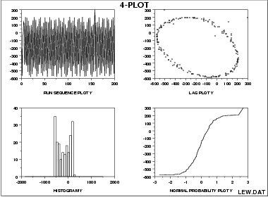

1.
Exploratory Data Analysis
1.3.
EDA Techniques
1.3.3.
Graphical Techniques: Alphabetic
|
Purpose:
Check Underlying Statistical Assumptions
|
The 4-plot is a collection of 4 specific EDA graphical techniques
whose purpose is to test the assumptions that underlie most
measurement processes. A 4-plot consists of a
- run sequence plot;
- lag plot;
- histogram;
- normal probability plot.
If the 4 underlying assumptions
of a typical measurement process hold, then the above 4 plots will
have a characteristic appearance (see the
normal random numbers case study below); if any of the underlying
assumptions fail to hold, then it will be revealed by an anomalous
appearance in one or more of the plots. Several commonly encountered
situations are demonstrated in the case studies below.
Although the 4-plot has an obvious use for univariate and time series
data, its usefulness extends far beyond that. Many statistical
models of the form
\[ Y_{i} = f(X_{1}, ... , X_{k}) + E_{i} \]
have the same underlying assumptions for the error term. That is,
no matter how complicated the functional fit, the assumptions on
the underlying error term are still the same. The 4-plot can and
should be routinely applied to the residuals when fitting models
regardless of whether the model is simple or complicated.
|
Sample Plot:
Process Has Fixed Location, Fixed Variation, Non-Random
(Oscillatory), Non-Normal U-Shaped Distribution, and Has
3 Outliers.
|

This 4-plot reveals the following:
- the fixed location assumption is justified as shown by the
run sequence plot in the upper left corner.
- the fixed variation assumption is justified as shown by the
run sequence plot in the upper left corner.
- the randomness assumption is violated as shown by the
non-random (oscillatory) lag plot in the upper right corner.
- the assumption of a common, normal distribution is violated
as shown by the histogram in the lower left corner and the
normal probability plot in the lower right corner. The
distribution is non-normal and is a U-shaped distribution.
- there are several outliers apparent in the lag plot in the
upper right corner.
|
Definition:
1. Run Sequence Plot;
2. Lag Plot;
3. Histogram;
4. Normal Probability Plot
|
The 4-plot consists of the following:
- Run sequence plot to test fixed location and variation.
- Vertically: Yi
- Horizontally: i
- Lag Plot to test randomness.
- Vertically: Yi
- Horizontally: Yi-1
- Histogram to test (normal) distribution.
- Vertically: Counts
- Horizontally: Y
- Normal probability plot to test normal distribution.
- Vertically: Ordered Yi
- Horizontally: Theoretical values from a normal N(0,1)
distribution for ordered Yi
|
|
Questions
|
4-plots can provide answers to many questions:
- Is the process in-control, stable, and predictable?
- Is the process drifting with respect to location?
- Is the process drifting with respect to variation?
- Are the data random?
- Is an observation related to an adjacent observation?
- If the data are a time series, is is white noise?
- If the data are a time series and not white noise, is it
sinusoidal, autoregressive, etc.?
- If the data are non-random, what is a better model?
- Does the process follow a normal distribution?
- If non-normal, what distribution does the process follow?
- Is the model
\[ Y_{i} = A_0 + E_{i} \]
valid and sufficient?
- If the default model is insufficient, what is a better model?
- Is the formula
\( s_{\bar{Y}} = s/\sqrt{N} \)valid?
- Is the sample mean a good estimator of the process location?
- If not, what would be a better estimator?
- Are there any outliers?
|
Importance:
Testing Underlying Assumptions Helps Ensure the Validity
of the Final Scientific and Engineering Conclusions
|
There are 4 assumptions that typically underlie all measurement
processes; namely, that the data from the process at hand
"behave like":
- random drawings;
- from a fixed distribution;
- with that distribution having a fixed location; and
- with that distribution having fixed variation.
Predictability is an all-important goal in science and engineering.
If the above 4 assumptions hold, then we have achieved probabilistic
predictability--the ability to make probability statements not only
about the process in the past, but also about the process in the
future. In short, such processes are said to be "statistically in
control". If the 4 assumptions do not hold, then we have a process
that is drifting (with respect to location, variation, or
distribution), is unpredictable, and is out of control. A simple
characterization of such processes by a location estimate, a variation
estimate, or a distribution "estimate" inevitably leads to optimistic
and grossly invalid engineering conclusions.
Inasmuch as the validity of the final scientific and engineering
conclusions is inextricably linked to the validity of these same 4
underlying assumptions, it naturally follows that there is a real
necessity for all 4 assumptions to be routinely tested. The 4-plot
(run sequence plot, lag plot, histogram, and normal probability plot)
is seen as a simple, efficient, and powerful way of carrying out this
routine checking.
|
Interpretation:
Flat, Equi-Banded, Random, Bell-Shaped, and Linear
|
Of the 4 underlying assumptions:
- If the fixed location assumption holds, then the run sequence
plot will be flat and non-drifting.
- If the fixed variation assumption holds, then the vertical
spread in the run sequence plot will be approximately the
same over the entire horizontal axis.
- If the randomness assumption holds, then the lag plot will be
structureless and random.
- If the fixed distribution assumption holds (in particular, if
the fixed normal distribution assumption holds), then the
histogram will be bell-shaped and the normal probability plot
will be approximatelylinear.
If all 4 of the assumptions hold, then the process is "statistically
in control". In practice, many processes fall short of achieving this
ideal.
|
|
Related Techniques
|
Run Sequence Plot
Lag Plot
Histogram
Normal Probability Plot
Autocorrelation Plot
Spectral Plot
PPCC Plot
|
|
Case Studies
|
The 4-plot is used in most of the case studies in this chapter:
- Normal random numbers (the
ideal)
- Uniform random numbers
- Random walk
- Josephson junction
cryothermometry
- Beam deflections
- Filter transmittance
- Standard resistor
- Heat flow meter 1
|
|
Software
|
It should be feasible to write a macro for the 4-plot in any
general purpose statistical software program that supports
the capability for multiple plots per page and supports the
underlying plot techniques.
|